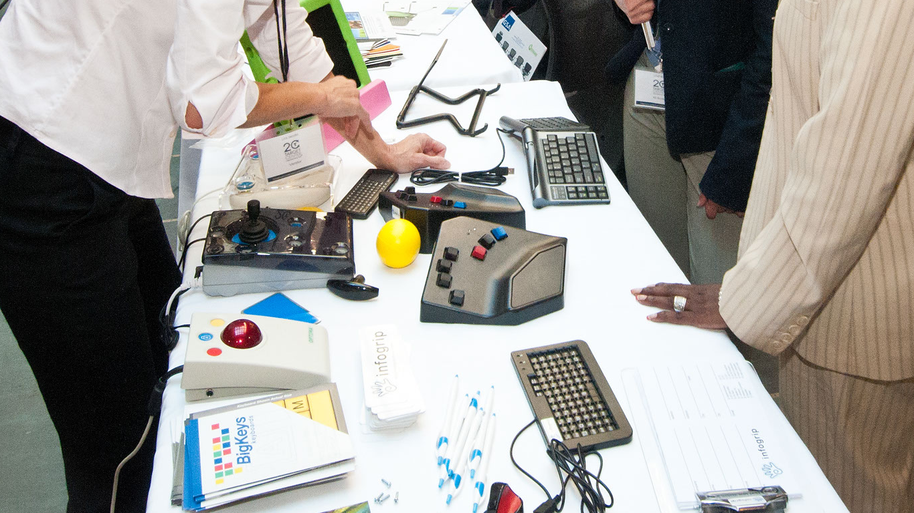

Spring 2020 WAS Accessibility Professional Certification Grant
Introductions
Sr. Director
Sr. Web A11y Solutions
Overview of the Journey
accessibilityassociation.org
Web Accessibility Specialist (WAS)
Expected to
- evaluate accessibility according to standards,
- provide detailed remediation recommendations, and
- personally design, develop, implement, evaluate, or manage the technical details of accessible web solutions.
accessibilityassociation.org/wascertification
Certified Professional in Accessibility Core Competencies (CPACC)
Demonstrate conceptual knowledge about
- disabilities
- accessibility and universal design, and
- accessibility-related standards, laws, and management strategies.
accessibilityassociation.org/cpacccertification
Exam
Testing center here!
- WAS Exam:
- When: May 22, 2020?
- Where: Somewhere in Torgersen
- Format: 100 multiple-choice questions with 4 responses
Maintaining Certification
- Certification valid for 3 years
- Must earn 35 Continuing Accessibility Education Credits over those 3 years
tinyurl.com/iaap-caec
Deque University
IAAP WAS Certification Preparation Curriculum
3.5 hours a week plus 1 hour meeting.
dequeuniversity.com
Weekly Meeting

- Where: 2020 Torgersen
- When:
-
Mon or Tues
9AM - 10AM - Except March 3
1PM - 2PM
-
Mon or Tues
tinyurl.com/s2020-was-cal
Participating Remotely
virginiatech.zoom.us/j/550317705
What Accessible Technologies Provides
Subcommittee Commitment
- 1 year committment after certification
- Meet once a month for 1 hour
Subcommittee Goals
- refine processes
- validate process
- identify top 5
- enterprise software needs
- strategies for increasing participation
In Your Circle of Influence
- review site
- fix site
- review again
- disseminate info and solicit needs
Canvas
tinyurl.com/s2020-was-canvas
Google Drive
tinyurl.com/drive-was-s2020
ANDI
tinyurl.com/andi-tool
ANKI
apps.ankiweb.net